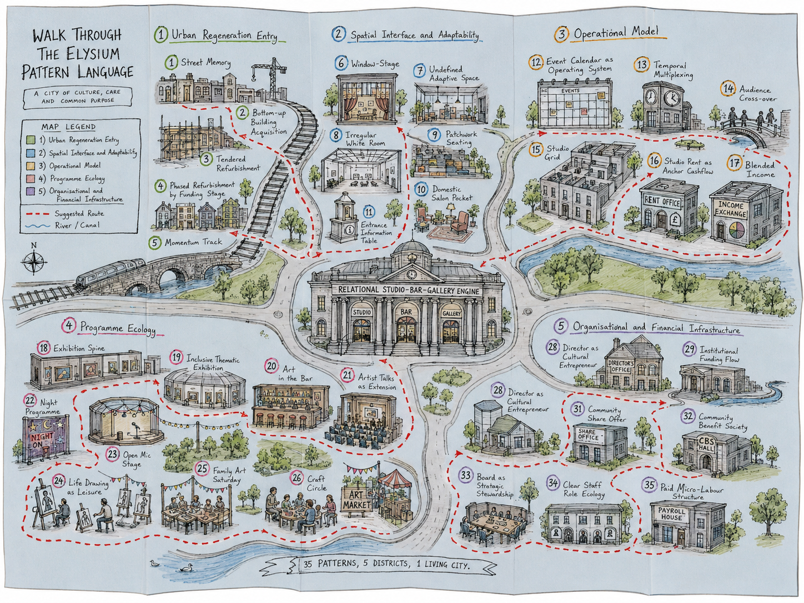

Permission to Be Yourself
A safe and respectful space where every person is allowed to arrive as they are. People do not have to perform a role, prove an identity, or justify their presence before they are welcomed.
A congratulation message on the opening of Elysium’s new home at JT Morgan.
With warm congratulations to Elysium, this note celebrates a civic moment: a vacant retail building becoming a working cultural place, and a private interior becoming part of Swansea’s shared life.Celebration note
On the twelfth of June, the building is not only being opened. It is being translated. A former department store begins to speak another language: studios, workshops, café tables, conversations, exhibitions, repairs, and small daily encounters.
For a researcher interested in relational aesthetics and urban renewal, this moment matters because it shows how a building changes through use. The architectural shell remains visible, but its social role is rewritten by the people who enter, work, host, organise, listen, and stay.
The former JT Morgan building therefore becomes more than a container for art. It becomes a structure for contact: between artists and visitors, between the city centre and the creative community, and between the memory of retail and the future of cultural production.
The former JT Morgan department store at 12–24 Belle Vue Way had stood empty for many years before its transformation into Elysium’s new Arts Centre. Its reuse matters because it turns a dormant city-centre building into a place of production, learning, gathering, and cultural visibility.
The building carries the memory of retail: display windows, circulation, browsing, and public access. These memories are not erased by the new project. They are redirected. The old store invited people to look at goods; the new centre invites people to make, meet, learn, perform, and return.
Public funding, local regeneration policy, and community support also form part of this story. The transformation has been supported through Swansea Council and the UK Government, Welsh Government Transforming Towns funding, the Arts Council of Wales, the Architectural Heritage Fund, and a community shares initiative. This means the project is not only a public regeneration investment, but also a place partly carried forward by the people who chose to become community shareholders.
In this sense, JT Morgan is not only an adaptive reuse project. It is a change in the social contract of the building. The space that once organised consumption now supports artists, audiences, local communities, and everyday cultural participation.
Elysium describes the new Arts Centre as a major step in its development from a roaming, artist-led initiative into the largest provider of artist studios in Wales. The move gives the organisation a more permanent base while keeping its emphasis on experimentation, collaboration, and public engagement.
The studio is both private and relational. Artists need a room to work, but they also need corridors, doors, neighbours, visitors, coffee, chance meetings, and shared rhythms. A large studio building can therefore generate a daily population and a quiet form of cultural density.
The centre’s café, exhibition programme, workshops, talks, and access facilities extend this studio ecology outward. They help turn a working building into a public cultural place where people can encounter art without needing to already belong to an art world.
The JT Morgan building can be read through six relational patterns. These patterns are small, practical arrangements that make social connection more likely. They do not force participation. They create the conditions in which participation can happen naturally.
The patterns below are therefore a way of looking beyond the image of regeneration. They ask how the building is actually used, how people are respected, how they are allowed to be themselves, and how the space resists becoming only a photograph of creativity.
A safe and respectful space where every person is allowed to arrive as they are. People do not have to perform a role, prove an identity, or justify their presence before they are welcomed.
The city-centre location makes the building part of ordinary routes, allowing artists, students, neighbours, visitors, and passers-by to meet it in daily life.
A soft middle world between studios, gallery, workshops, street, and visitors, where people can remain together without being forced to interact.
Studio work, exhibitions, workshops, music nights, families, coffee breaks, and quiet waiting produce encounters through time rather than through instruction.
Elysium belongs to a wider Swansea ecology of galleries, venues, artists, universities, friends, and neighbours who support rather than simply compete.
Long-term stability releases creative energy from the anxiety of survival, allowing the organisation to take risks, host others, and imagine a future.
Together, these six patterns show that relational aesthetics can be observed through very concrete details. The relation is not abstract. It appears in doors, routes, tables, timetables, cafés, studios, public events, neighbouring organisations, and the ordinary ways a building is kept open long enough for people to return.
This congratulation message is also shaped by my doctoral research, which asks how relational aesthetics can help us understand creative spaces, urban renewal, and the small spatial or operational details that invite human interaction. JT Morgan offers a strong case because its transformation is not limited to physical renovation. It creates a new everyday ecology for artists and the public.
For the city, the project contributes to footfall, cultural visibility, and the reuse of a long-empty building. For artists, it provides rooms, resources, proximity, and a stronger collective presence. For visitors, it creates a more accessible route into contemporary art through café space, exhibitions, workshops, talks, and informal encounters.
In this way, the JT Morgan building becomes a useful bridge between public celebration and doctoral reflection. It allows one event to be read on two levels: as a new chapter in Elysium’s history, and as a living example of how cultural infrastructure can produce relational moments in a city.
On the twelfth of June, a former department store becomes a working arts centre. Its importance lies not only in the restored building, but in the artists, visitors, staff, neighbours, events, conversations, and future memories it will gather.
As a small gift at the end of this note, I include this hand-drawn sketch version of the Elysium Pattern Language. It expands the shorter six-pattern reading in this HTML into a broader exploratory map: 35 patterns, 5 districts, 1 living city. This drawing should be read as a companion sketch rather than a fixed final taxonomy. It gathers field observations, operational insights, spatial ideas, and programme ecologies into one more relational form.
